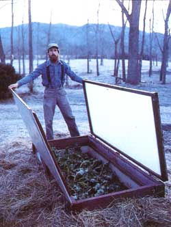

Gather ye boards and nails, and build...
Feeds a family of four from just 18 square feet!Shakesoffthe deep chills of December, ignores the moodiness of March, scoffs at scorching August afternoons!Can be built in a half day by any preliterate four-year-old (with a little help from Mom and Dad)!
OK, OK, MAYBE MOTHER'S VERSATILE four-season cold frame isn't really that good. But I've been gardening for 15 years and have seen and made my share of cold frames. (The first one I built was a primitive wooden box I stuck a foot deep in red clay. I came back after the first rain to find a box of water that didn't drain for days. Plants never entered its domain.) I've learned enough by now to know what features I'd want a good cold frame to have-and I think I've come up with a design that will suit most other gardeners as well.
YOU CAN SUM UP THE VIRTUES OF THIS INNOVATIVE COLD FRAME IN ONE WORD: SECURITY
Let's face it: The basic open-or-shut cold frame is a tricky fellow to operate. Open it up too early in the morning, and you're liable to nip the life out of those tender spring seedlings; leave it closed too long when the sun's out, and you're just as likely to cook )'em crisp.
MOTHER'S cold frame tackles those problems by offering more options than just wide open or shut tight. Instead, it has four settings: first position-that's completely closed, with the glass cover flat on the box. Second position-that's with the glass lid lifted partway up at about a 30' angle. Third position-the cover's now a good bit higher, at about a 60* angle. And fourth-that's with the cover swung all the way off the frame. Oh, then there's completely closed with the attached insulated cover down too-for an extra, fifth, position, to keep plants cozy on cold winter nights.
These options offer a variety of advantages. Most cold frames are built either for spring/fall or for winter use, the latter having a much steeper glazing angle to make better use of low winter sun. I didn't want a frame that was good for only one season. This one, when open to the steeply angled third position, is great for absorbing winter sun; when dropped halfway down to second position, is angled well for spring and fall.
Adding an attached insulated cover opened up even more options. First, it gave me many nights of sound sleep because I wasn't worrying about how low the temperatures had dropped or if I had laid enough blankets on top of the frame. Second , because it's attached, I'm much more likely to use it. (Otherwise, I'd probably be asking my wife every chilly evening, "Susan, did you see where I left the cold frame cover?") And third, because the inside of the cover is white, it can reflect extra light into the plant box when the glazing's in first, second, or third position.
Another great thing about MOTHER'S cold frame is that it offers protected venting situations. I've seen enough sudden spring hail-and thunderstorms that I don't feel com fortable leaving a cold frame open to the elements-even if it's the middle of the day and the sun's blazing down. With this model, air can flow through from the sides while the "roof" still protects from above. (If the wind's too strong from one side, we'll cover that end with a window sash or piece of plywood.) That also keeps me from having to keep the glass cover completely shut on overcast and wet days-a situation that just invites disease.
Construction
No matter how well designed a cold frame is, it won't do much good in a bad site. Your first priority should be to choose a spot with good sunlight that faces close to due south. Proximity to the house comes second, to make the box easier to tend. (Be sure, though, that snow or ice can't slide off your house roof onto your cold frame.) And if you have a drainage problem as I did with my first plant box, underlay yours with gravel and plastic drainpipe.
The accompanying illustrations can do most of the talking about how to build MOTHER'S cold frame. I'll just give some general advice and cover a few specifics.
1) glass cover down 2) glass and reflecting covers slightly open, 3) glass and reflecting covers up high, 4) both coversoff 5) both covers down.
Cold frames are by their very nature subject to severe water stress. In my experience, no paint job will protect them for long. So I built this model out of rot-resistant west coast cedar. I'd recommend it or some other naturally weather-tough wood. (I wouldn't use pressure-treated lumber myself; I'd be afraid it might damage or contaminate the plants.)
Since the box's main job is to protect crops from cold, I made the walls out of extruded polystyrene board (don't use beadboard; it soaks up water), to provide insulation, and caulked every joint before nailing, to reduce air infiltration. Also, to help the structure stay snugly together, I liberally applied construction adhesive during assembly, along with using ordinary nail-and-screw fasteners.
I designed the cold frame around the glazing - in this case, a standard, single-paned, 76 " X 34" sliding-glass-door replacement panel. I like glass: It's durable and attractive. And door panels are made of tempered glass and are readily available.
I did have to make a frame for the glass (probably the most exacting step of the entire project) by cutting 3/16"-wide grooves 1/8" deep in one side of some 2 X 2 stock. After gluing and screwing those on, I put 36" pieces of 1 X 4 on the frame sides to add extra strength and to serve as handles.
The box was built to fit the glazing. It has a 2 X 6 frame (with 1 X 4 legs). The four 16 "-wide polystyrene walls can be cut out of one 8' sheet of the insulation board. They're lined on the inside with 1/8"-thick sheet fiberglass (it's sold as mobile-home underpinning) to protect them from periodic digging. Cut this inside liner 1/2" wider than the polystyrene so it can lap over the frame for a tight seal. Note: Put the liner on the long insulation pieces before you push in the side ones. That way you can fit the walls and liner together snugly at the corners.
I then added strips of 1 X 2 cedar as interior molding where the insulation meets the frame.
The cover is made out of 1/4" plywood covered with aluminum flashing that's folded over at the edges, much like a tucked-in bed sheet. An interior frame of 1 X 2" cedar is screwed 1 1/2" in from the outer edge. The cover's insulation board fits in that frame. Both frame and insulation are then surfaced with sheet fiberglass. The lid is attached with double-tongued hinges.
You're now ready to dig a 16" hole for the box. Put it in, and before you backfill, make sure the box is still square by checking it with a framing square and by opening the cover once or twice. Then attach the glass cover (it rests on top of the insulated one) with single-tongued hinges, set hooks in the top corner of the glass frame as well as matching eyes in the insulated cover, at both its top comer and halfway down (to hold the glazing in second and third positions) ... and you're ready to grow!
Construction schematicofMOTHER'Scold frame
When you're starting spring seedlings, you may want to use your cold frame as a hot bed, either by filling its lower 8" to 10" with partly rotted manure and straw or by putting in a soil heat tape. The base heat provided will definitely help seeds germinate and seedlings grow. After your spring crops are all out, you might raise summer lettuce (under a shade cloth) or even do what we do-switch the covers' positions, add a heat lamp, and use the frame to brood baby chicks. Then, come fall, you could simply scratch in the chicks' droppings and start a well-fertilized crop of winter kale.
For spring seedlings, summer lettuce, winter kale-and even a few baby chicks.
As I said, MOTHER's four-season cold frame is a versatile one. But really, if I were to sum up what I most like about it in one word, I'd say, "Security." After all, the chance of freezing or burning plants in this cold frame is very low. Plus, it protects crops from those elements that sometimes seem to be trying their best to keep us all from being the successful gardeners we want to be.
|
 WILLIAM WALDRON YOU CAN SUM UP THE VIRTUES OF THIS INNOVATIVE COLD FRAME IN ONE WORD: SECURITY |
|
|